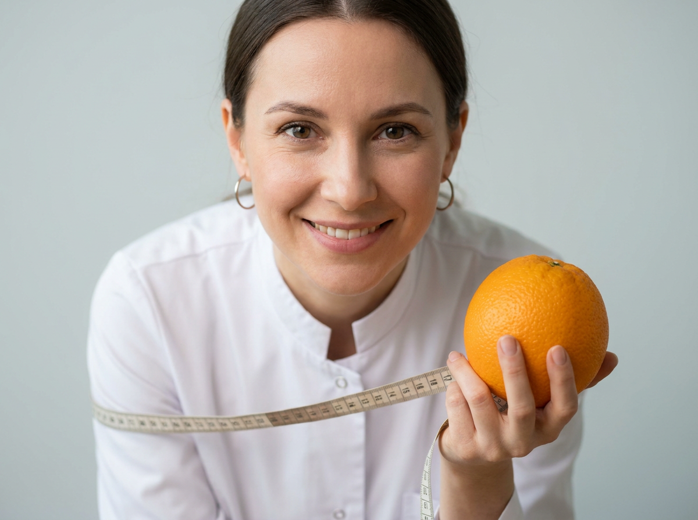
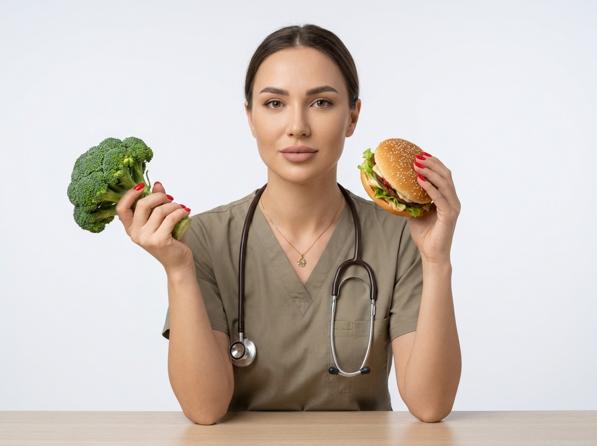
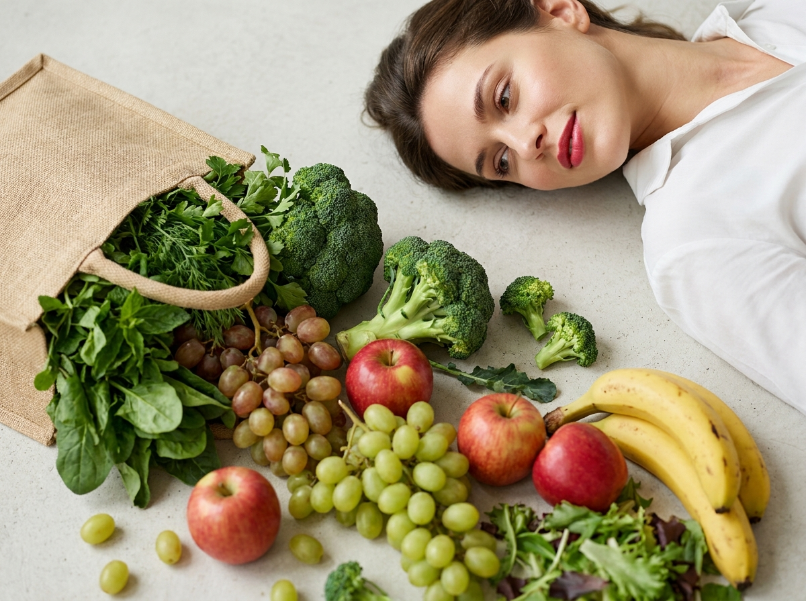
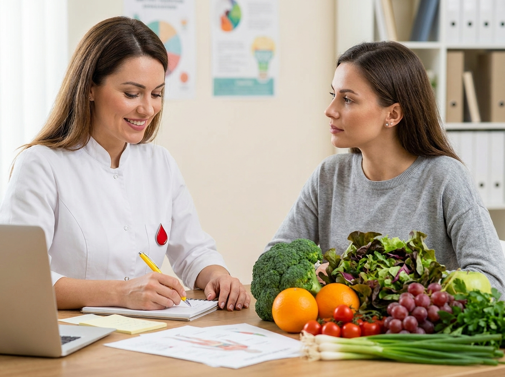
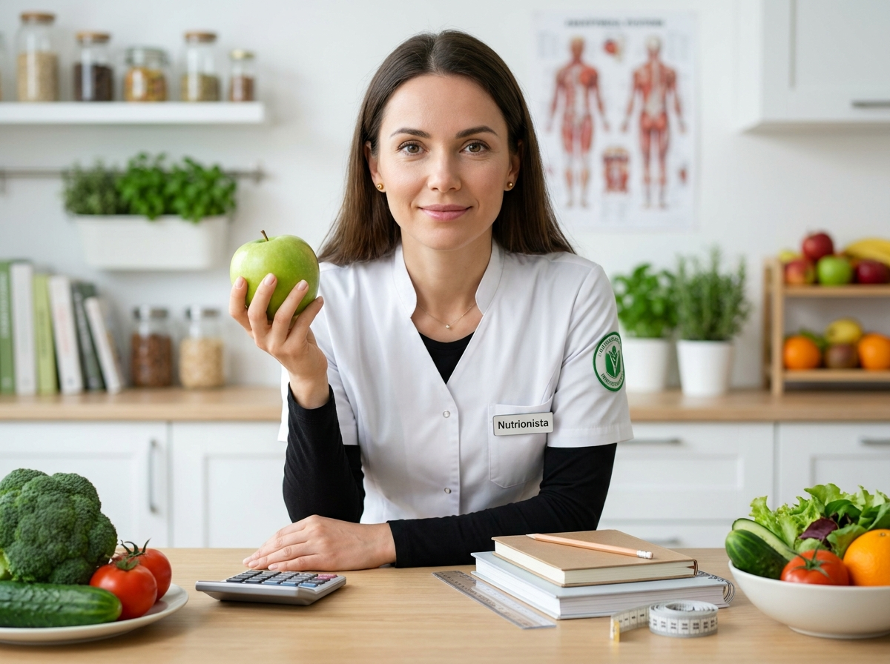
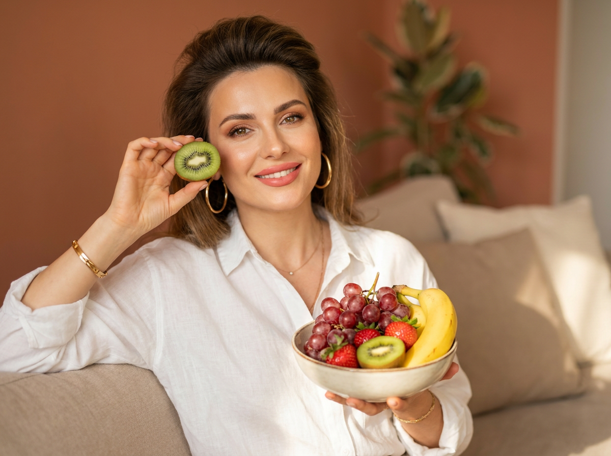
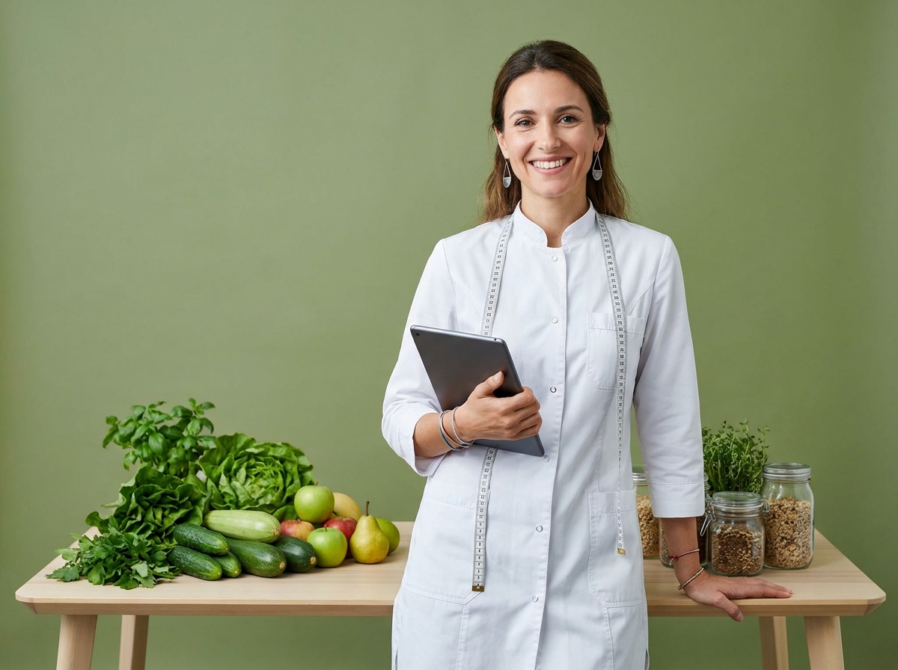
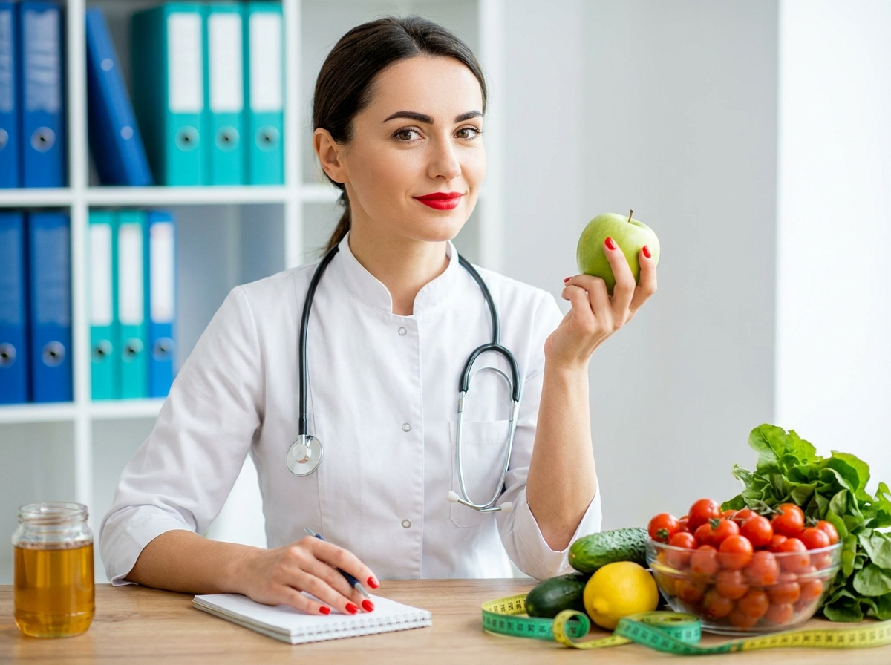
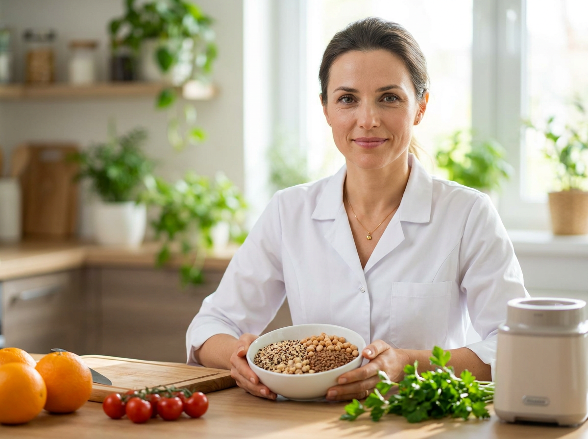

ИИ-фото для нутрициолога: 10 промптов для нейросети

Нутрициологу нужны фотографии для сайта, профиля и постов, но студийная съёмка отнимает время и не всегда передаёт нужное настроение. Генерация помогает быстро получить серию кадров в едином стиле: от делового портрета до тёплой консультации с клиентом.
В подборке - 10 сценариев с подробным описанием внешности, одежды, позы, реквизита, света и композиции. Здесь есть фото за рабочим столом, сцены с пациентом, flat lay с продуктами и домашние wellness-кадры.
Как сгенерировать такое фото: пошагово
Нужен снимок анфас при ровном свете, лицо в кадре целиком, без тёмных очков и головных уборов. Разрешение от 1000 пикселей по короткой стороне. Чем чётче исходник, тем точнее модель повторит черты.
Выберите сценарий ниже и нажмите «Копировать» - текст уйдёт в буфер целиком, вместе с командой сохранения внешности. Эта команда стоит первой строкой и отвечает за то, чтобы на выходе было ваше лицо, а не случайное.
Кнопка «Сгенерировать» рядом с каждым промптом открывает модель в новой вкладке. Nano Banana Pro работает с референсом лица - в отличие от моделей, которые генерируют портрет с нуля и узнаваемость теряют.
Промпт - в поле ввода, портрет - через загрузку референса. Порядок значения не имеет, но без референса команда сохранения внешности работать не будет: модели нечего сохранять.
Для сторис и ленты берите 9:16, для превью и обложек - 4:3. Первый результат редко идеален: если поза или свет ушли не туда, поправьте соответствующую часть промпта и запустите заново. Обычно хватает двух-трёх итераций.
10 промптов для генерации
1. Портрет с сантиметровой лентой
Строго сохранить внешность по загруженному референсу: черты лица, пропорции, мимику и текстуру кожи без изменений. Фотореалистичный lifestyle-портрет нутрициолога в студии или домашнем кабинете, крупный план close-up, мягкий естественный свет, женщина в кадре по грудь слегка подаётся вперёд и смотрит прямо в объектив. Спокойное уверенное выражение, лёгкая доброжелательная улыбка, естественная мимика и выразительный взгляд. Использовать загруженный референс лица без изменения индивидуальных черт, формы глаз, бровей, носа, губ, овала и пропорций. Макияж минимальный: ровный тон кожи, аккуратные брови, лёгкий румянец, нюдовая матовая помада. Небольшие серьги или серьги-кольца без символов. Белый халат или медицинская форма с аккуратным воротником, однотонная ткань без логотипов и текста. Обязательный реквизит - сантиметровая лента, расположенная горизонтально перед грудью; деления видны, но цифры и надписи не читаются. Вертикальный формат, реалистичная кожа, резкость на лице, мягкий фон без лишних деталей.
2. Нутрициолог за столом

Строго сохранить внешность по загруженному референсу: черты лица, пропорции, мимику и текстуру кожи без изменений. Профессиональная фотореалистичная съёмка нутрициолога в светлом кабинете, healthcare & nutrition, мягкий равномерный студийный свет и нейтральный фон. Женщина сидит за столом, в кадре от груди до талии, нижняя часть стола частично попадает в композицию. Она смотрит в камеру, выражение спокойное, уверенное и доброжелательное. Лицо выполнить по загруженному референсу, точно сохранив индивидуальные особенности, естественную мимику и пропорции. Макияж аккуратный и натуральный: ровная кожа, выразительные глаза, ухоженные брови, нюдово-розовая помада. На шее тонкая цепочка с маленьким кулоном без текста. На женщине медицинский костюм или скраб цвета хаки либо изумрудного оттенка, V-образный вырез. На шее лежит реалистичный стетоскоп с тёмными трубками и металлической головкой. Портретная вертикальная композиция, камера на уровне глаз, чистый фон, без логотипов и читаемых надписей.
3. Wellness flat lay с продуктами

Строго сохранить внешность по загруженному референсу: черты лица, пропорции, мимику и текстуру кожи без изменений. Фотореалистичная wellness-сцена в формате flat lay с человеком в кадре, камера расположена сверху под углом примерно 30–45 градусов к поверхности. Светлый бетонный или каменный фон, в центре композиции разложены свежие овощи и фрукты: зелень, авокадо, яблоки, цитрусовые и другие натуральные продукты. Женщина-нутрициолог лежит или опирается на бок у края кадра, голова повернута к еде, взгляд направлен внутрь композиции. На лице спокойное расслабленное выражение и лёгкий полуоборот губ, без гримасы. Внешность передать по загруженному референсу, сохранив черты лица и естественные пропорции. Кожа ухоженная, макияж натуральный с акцентом на глаза, подчёркнутые ресницы и брови, помада красно-розового матового или сатинового оттенка. Белая свободная рубашка или медицинская форма без текста и логотипов. Мягкие тени, реалистичные фактуры продуктов, вертикальный кадр.
4. Консультация за рабочим столом

Строго сохранить внешность по загруженному референсу: черты лица, пропорции, мимику и текстуру кожи без изменений. Фотореалистичная офисная lifestyle-сцена в кабинете нутрициолога, дружелюбная командная консультация. Две женщины сидят за столом в боковой перспективе, образуя треугольную композицию: слева нутрициолог наклонилась к столу и пишет ручкой в блокнот или лист, справа пациентка внимательно слушает. Атмосфера спокойная, профессиональная, без напряжения. Лицо специалиста выполнить по загруженному референсу с сохранением индивидуальных черт и естественной мимики. На ней белый халат или медицинская куртка, натуральный макияж, ухоженные брови, тушь, нюдовые губы, мягкая улыбка или сосредоточенное выражение. На шее красный каплевидный медицинский аксессуар или стилизованная булавка без логотипа. Пациентка одета нейтрально, её внешность вторична. На столе блокнот, ручка и несколько аккуратно разложенных материалов. Свет мягкий оконный, интерьер светлый, реалистичные руки, без читаемого текста.
5. Деловой портрет в халате

Строго сохранить внешность по загруженному референсу: черты лица, пропорции, мимику и текстуру кожи без изменений. Фотореалистичный профессиональный портрет нутрициолога в светлом кабинете, вертикальная композиция, средний план от груди или бёдер, женщина слегка наклоняет корпус вперёд и смотрит в объектив с мягкой улыбкой. Внешность создать по загруженному референсу, не меняя форму глаз, бровей, носа, губ, овала лица, пропорций и естественной мимики. Макияж аккуратный: ровный тон кожи, ухоженные брови, подчёркнутые глаза, губы естественного оттенка. В ушах маленькие золотистые серьги-гвоздики, на шее тонкая цепочка с миниатюрным кулоном. Белый халат или медицинский пиджак надет поверх чёрного базового топа. На груди размещён небольшой бейдж в стиле «Nutriionista», но текст не должен быть крупным, идеально читаемым или содержать ошибки; допустим нейтральный размытый бейдж без надписи. Свет мягкий студийный, фон чистый и светлый, камера на уровне глаз, натуральная текстура кожи.
6. Уютный wellness-портрет

Строго сохранить внешность по загруженному референсу: черты лица, пропорции, мимику и текстуру кожи без изменений. Фотореалистичный lifestyle-портрет специалиста по здоровому питанию в уютной домашней обстановке. Женщина сидит на диване, кадр от пояса до колен, корпус немного повёрнут вправо, голова слегка наклонена, взгляд направлен к камере, на лице мягкая улыбка. Лицо и индивидуальные особенности передать по загруженному референсу без изменения внешности. Волосы ухоженные, с естественным объёмом у корней. Макияж beauty-natural: ровный тон, выразительные брови, тёплые тени, аккуратная подводка, подчёркнутые ресницы, помада розово-персикового оттенка. Крупные золотистые серьги-кольца, золотой браслет, возможно тонкая цепочка или подвеска без текста. На женщине белая свободная рубашка или блуза с воротником в стиле smart casual wellness. Интерьер с диваном, мягким пледом и рассеянным домашним светом, спокойная натуральная цветовая гамма, малая глубина резкости, реалистичная ткань и кожа.
7. Полнофигурный образ health coach

Строго сохранить внешность по загруженному референсу: черты лица, пропорции, мимику и текстуру кожи без изменений. Фотореалистичное студийное lifestyle-фото нутрициолога или health coach, женщина стоит у стола с продуктами, вертикальная композиция, кадр от головы примерно до колен, камера на уровне глаз. Она слегка поворачивает корпус к объективу, держится уверенно и мягко улыбается. Внешность выполнить по загруженному референсу с точным сохранением черт лица, пропорций и естественной мимики. Ухоженная кожа, естественный макияж, выразительные брови, открытая дружелюбная улыбка. В ушах металлические серьги-подвески или серьги-капли, на руке тонкие браслеты. Белый медицинский халат или костюм нутрициолога с пуговицами, чистая ткань и заметные швы. Сантиметровая лента проходит через шею или перекинута через плечо, деления выглядят реалистично, но цифры и текст не читаются. На столе сезонные овощи, фрукты и зелень. Свет мягкий студийный, фон светлый, продукты резкие, без логотипов.
8. Стетоскоп и красная помада

Строго сохранить внешность по загруженному референсу: черты лица, пропорции, мимику и текстуру кожи без изменений. Фотореалистичное офисное lifestyle-фото нутрициолога, женщина сидит за столом и смотрит прямо в камеру. Вертикальный портретный формат, средний план, камера на уровне глаз, мягкая улыбка, уверенное и доброжелательное выражение лица. Внешность специалиста передать по загруженному референсу, сохранив индивидуальные черты, форму лица, пропорции и естественную мимику. Кожа ухоженная, брови аккуратные, глаза выразительные. Макияж с ровным тоном, тушью или тонкой подводкой и ярко-красной помадой насыщенного алого оттенка. Маникюр выполнен красным лаком. На женщине белый врачебный халат или медицинская куртка с аккуратным воротником, гладкая чистая ткань. На шее реалистично лежит стетоскоп с тёмными трубками и металлической головкой, на металле заметен естественный блик. Деловой образ без лишних аксессуаров, логотипов и читаемых надписей. Свет равномерный, фон нейтральный, лицо и руки в резкости.
9. Тёплая консультация дома
Строго сохранить внешность по загруженному референсу: черты лица, пропорции, мимику и текстуру кожи без изменений. Фотореалистичная lifestyle-сцена консультации нутрициолога в уютной гостиной, семейная и дружелюбная атмосфера. За столом находятся две женщины: справа или по центру нутрициолог, слева на переднем плане пациентка, показанная со спины или в профиль, её лицо частично закрыто волосами. Специалист смотрит на пациентку, мягко улыбается и что-то объясняет. Её внешность создать по загруженному референсу, сохранив индивидуальные черты и естественную мимику. Волосы выглядят натурально, без чрезмерного глянца. Макияж с ровным тоном, выразительными бровями, мягко подчёркнутыми глазами и розово-нюдовыми губами. На женщине белый халат или медицинская накидка поверх лёгкой одежды, на шее стетоскоп. В руках она держит перед пациенткой информационный плакат, карточку или лист с простой схемой питания; текст сделать размытым и нечитаемым. На столе стакан воды, блокнот и небольшая миска с продуктами. Мягкий оконный свет, тёплые оттенки, естественная перспектива.
10. Миска с полезными продуктами

Строго сохранить внешность по загруженному референсу: черты лица, пропорции, мимику и текстуру кожи без изменений. Фотореалистичное lifestyle-фото нутрициолога в современном домашнем или офисном кабинете. Женщина сидит за столом, кадр по грудь или до пояса, камера на уровне глаз, композиция центральная: внимание одновременно на лице специалиста и миске с продуктами на переднем плане. Она смотрит в объектив и мягко улыбается, выражение уверенное, дружелюбное и естественное. Внешность передать по загруженному референсу без изменения индивидуальных черт, овала лица, пропорций и мимики. Ухоженная кожа, аккуратные брови, лёгкий макияж, подчёркнутые глаза, натуральные губы с сатиновым оттенком. Волосы с мягким естественным блеском. Тонкая золотистая цепочка с маленьким кулоном и лёгкие серьги-гвоздики без знаков. Белый медицинский халат или блуза нутрициолога с воротником и пуговицами, чистая ткань без логотипов. В миске красиво разложены овощи, ягоды, зелень или цельнозерновые продукты. Мягкий рассеянный свет, натуральные цвета, реалистичные руки и фактуры.
Что важно учесть в этом стиле
Для нутрициолога лучше работает образ специалиста, которому легко доверять: чистый свет, спокойная мимика, аккуратная одежда и понятный реквизит. Белый халат, стетоскоп и сантиметровая лента сразу задают профессиональный контекст, но их не должно быть слишком много в одном кадре.
Просите нейросеть о естественной коже, реалистичных руках и нечитаемых надписях. Текст на бейджах, листах и упаковках часто превращается в набор символов, поэтому для сайта безопаснее использовать размытые или пустые поверхности. Для аватара подойдёт крупный план, для поста о консультации - средний или общий кадр.
Идеи для вариаций
- Замените белый халат на форму цвета шалфея, молочного шоколада или тёмной бирюзы.
- Попросите кадр с сезонными продуктами: весенней зеленью, осенними овощами или летними ягодами.
- Добавьте на стол блокнот с пустой страницей, кухонные весы или стеклянный стакан воды.
- Сделайте серию в одном интерьере: портрет, консультация, фото рук и кадр с готовым блюдом.
- Для соцсетей попробуйте вертикальный формат 4:5, а для обложки сайта - широкий кадр 16:9 с местом под заголовок.
Как собрать свой промпт
Сначала задайте задачу изображения: портрет для профиля, консультация, экспертный пост или рекламный баннер. Затем укажите план, положение камеры, направление взгляда и выражение лица. После этого опишите одежду, локацию, свет и один-два главных предмета в кадре.
Технические параметры лучше добавлять в конце: вертикальный формат 4:5, объектив 50 мм для портрета или 35 мм для сцены с клиентом, диафрагма f/2.8, мягкий рассеянный свет, разрешение от 2048 пикселей по длинной стороне. Генерируйте 4–8 вариантов, а затем уточняйте только проблемную деталь - руки, реквизит или фон.
Ошибки, из-за которых кадр не получается
- Слишком много реквизита. Стетоскоп, лента, продукты, блокнот и плакат конкурируют за внимание. Оставьте один главный акцент.
- Нечёткая композиция. Не указаны план, положение камеры и направление взгляда, поэтому персонаж может оказаться обрезанным или отвернуться от зрителя.
- Читаемый текст. Бейджи и листы часто содержат случайные символы. Просите размытые надписи или чистый лист.
- Неестественные руки. Для сцен с письмом и миской отдельно задавайте пять пальцев, анатомичную кисть и реалистичный хват предмета.
- Слишком глянцевый образ. Формулировки вроде «идеальная кожа» и «безупречная внешность» усиливают эффект пластика. Лучше описывать натуральную текстуру и мягкий свет.
Частые вопросы
Как сделать такое ИИ-фото бесплатно?
Попробуйте Kandinsky и Шедеврум: они подходят для базовой генерации по тексту, но точность лица и работа с загруженным референсом могут быть ограничены. Krea AI и Arena.ai удобны для тестов и сравнения вариантов, однако доступность функций, число попыток и качество референса меняются. Для портретов с узнаваемым лицом обычно приходится сделать несколько генераций и вручную отобрать удачную.
Как сохранить сходство с референсом?
Загрузите хорошо освещённый портрет анфас без фильтров и очков. В промпте отдельно укажите, что нужно сохранить форму глаз, бровей, носа, губ, овал лица и естественную мимику. Не меняйте одновременно возраст, причёску, ракурс и макияж - это снижает точность.
Какой формат выбрать для соцсетей?
Для постов и карточек подойдёт вертикальный формат 4:5, для сторис и коротких видео - 9:16. Аватар лучше генерировать квадратным 1:1, оставляя немного воздуха вокруг головы. Если изображение будет обложкой статьи, попросите широкий кадр 16:9 и свободное место сбоку под заголовок.
Можно ли использовать такие изображения на сайте?
Да, если сервис разрешает коммерческое использование результата и у вас есть право применять загруженный референс. Не выдавайте сгенерированного человека за реального клиента, не добавляйте ложные медицинские обещания и проверьте правила выбранного инструмента перед публикацией.